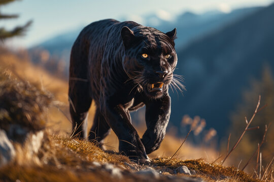

Pantera negra
(Panthera pardus)
Los jaguares negros pueden habitar muchos lugares, pero se sabe que la mayoría de las panteras negras se encuentran en la Amazonía,
en la selva tropical profunda.
Los leopardos negros habitan tanto en Asia como en África.
Cazan en solitario y solo se relacionan con otras panteras en época de apareamiento o celo. Pasan parte del día limpiándose la piel,
para eliminar de ella el olor que dejan sus presas.
Son excelentes trepadores de árboles, en los que descansan y desde los que también acechan, resguardan y comen sus presas.

- Los ojos de la pantera negra son de color verde intenso y también las hay de ojos azul claro, amarillos y dorados.
- La vida sexual de las panteras comienza aproximadamente a los dos años de vida.
- El periodo de gestación es de unos tres meses y paren unos cuatro cachorros que nacen ciegos,
permaneciendo así durante el primer mes de vida y siendo amamantados hasta los seis meses.
- Miden alrededor de 1,50 m de largo, su cola mide un metro.
- Tienen una excelente visión nocturna similar a los gatos, y cazan en la oscuridad de la noche.
MENU PRINCIPAL